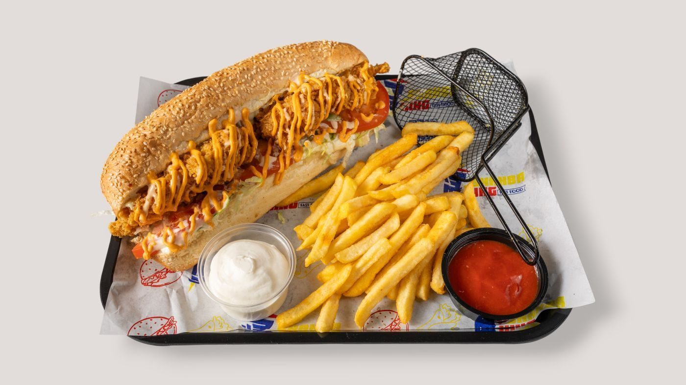

Design Preview: this is a concept website created by Freightfolio to show what a new website for this business could look like. It is not the business's live website.
Photo of Trilby's from its OpenTable listing: the restaurant exterior at night.
Ocean Springs, MS
A Coast tradition in Ocean Springs: Creole, Cajun, and Southern seafood from executive chef Anthony Rametta.
Trilby's is a Creole, Cajun, and Southern seafood restaurant at 1203 Bienville Blvd in Ocean Springs, led by executive chef Anthony Rametta. The restaurant describes itself as a Coast tradition in Ocean Springs, and many of the dishes on its menu are Trilby's own. Lunch runs Tuesday through Friday, dinner runs Tuesday through Friday and Saturday, and the restaurant is closed Sunday and Monday.


All gallery photos are stock photos, labeled as such. They show the kind of work and setting described on this page, not this business.
1203 Bienville Blvd, Ocean Springs, MS 39564
Tuesday through Friday, lunch 11:00 AM to 2:00 PM and dinner 5:00 PM to 9:00 PM; Saturday, 4:00 PM to 9:00 PM; closed Sunday and Monday.
Trilby's serves Ocean Springs, MS. Questions? Call +1 228-875-4279.